Use the '=' operator to assign a value
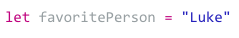The name on the left is assigned to the value on the right
The '=' operator can also be used to modify or reassign a value to a variable
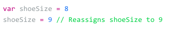You can use the (+,-,*,/) to perform basic math
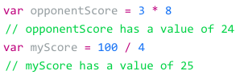You can use the values of other variables to perform arithmetic using operators
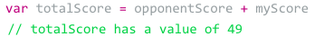An operator can reference the current variable, updating it to a new value
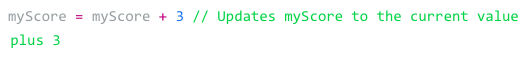To be more precise, you can use the same operations on Double values
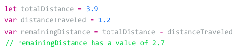When you use the operation "/" on Int values, then the result will be an Int value rounded down to the nearest whole mumber
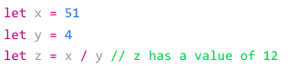If you explicitly declare constants or variables and Double values, the result will include decimal values
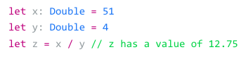Make sure to use Double values whenever your code requires decimal-point accuracy
There is a more efficient way to update a variable by adding to itself, which is called Compound Assignment
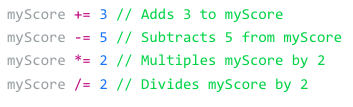Mathematic operations in Swift follow the Order of Operations
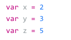 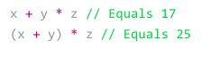In the first equation, multiplication is superior to the addition
In the second equation, the parentheses get to do their work first
You can not mix and match numbers when performing mathematical operations
For example, the following will produce a compiler error because x is an Int value and y is a Double Value
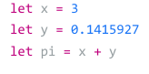To enable the code to finish, you can create a new Double value from x by prefixing the type you want to convert it to
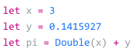